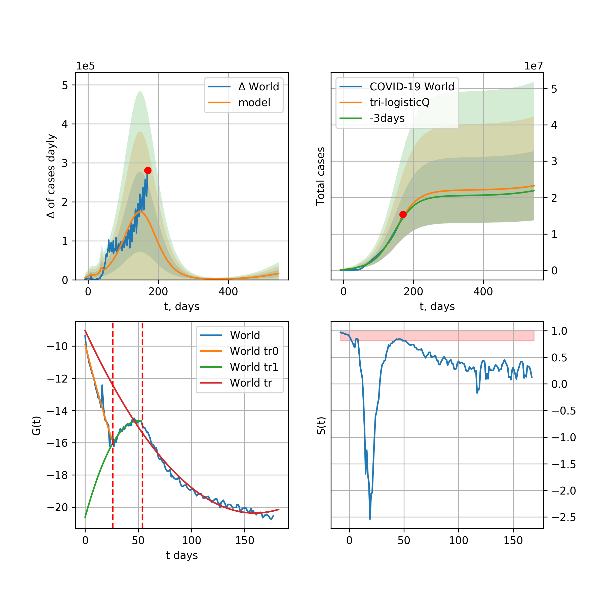
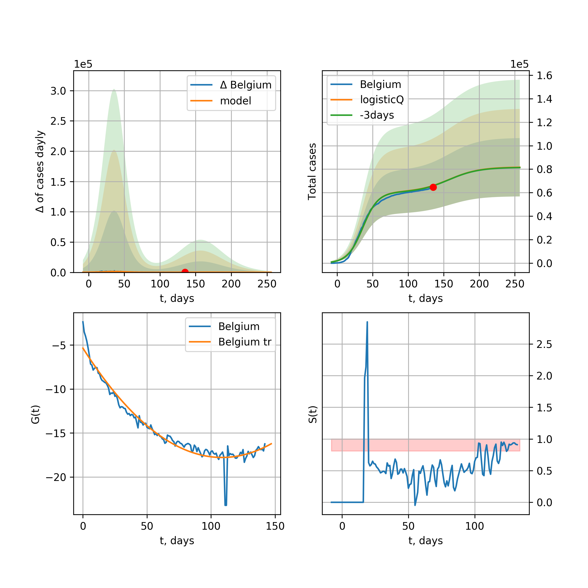
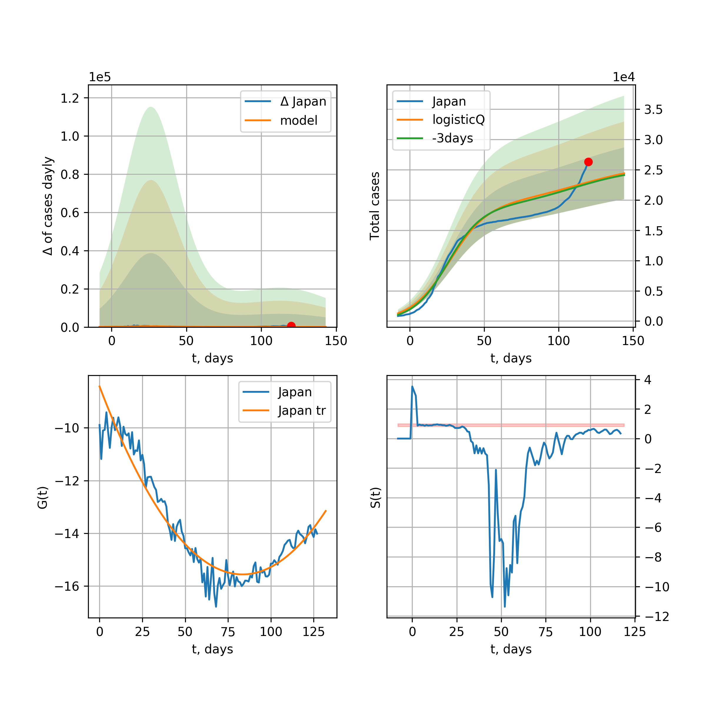
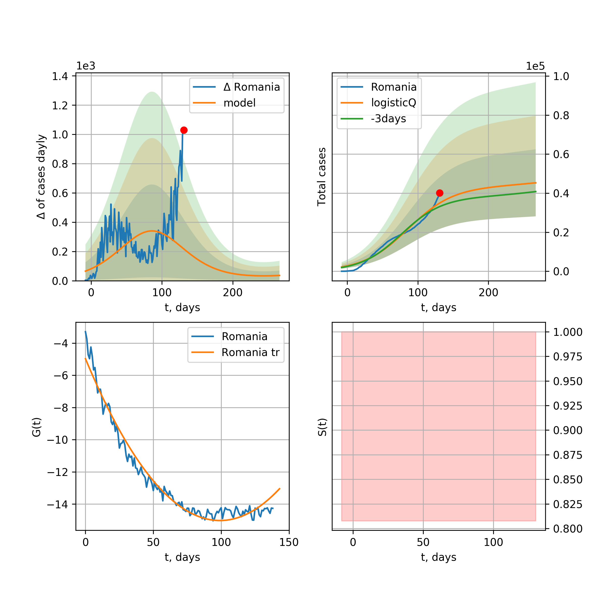
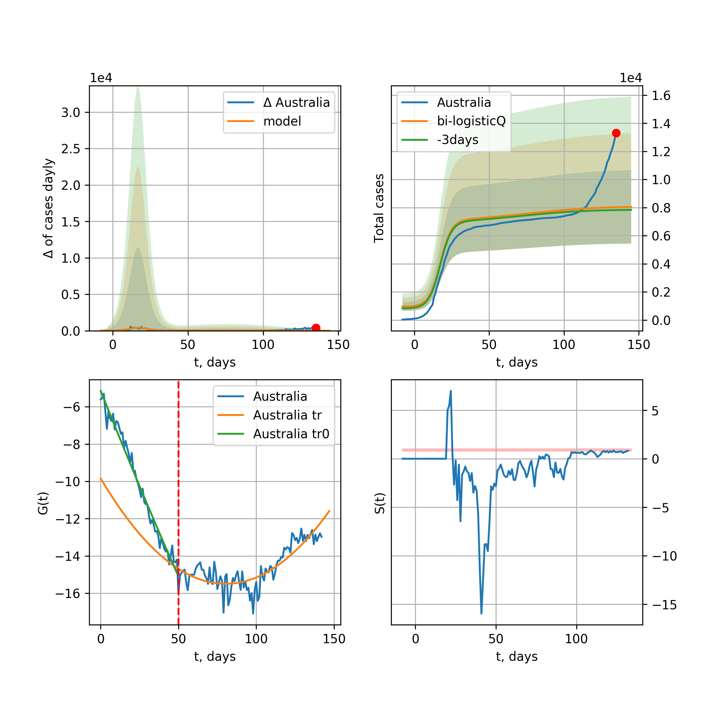
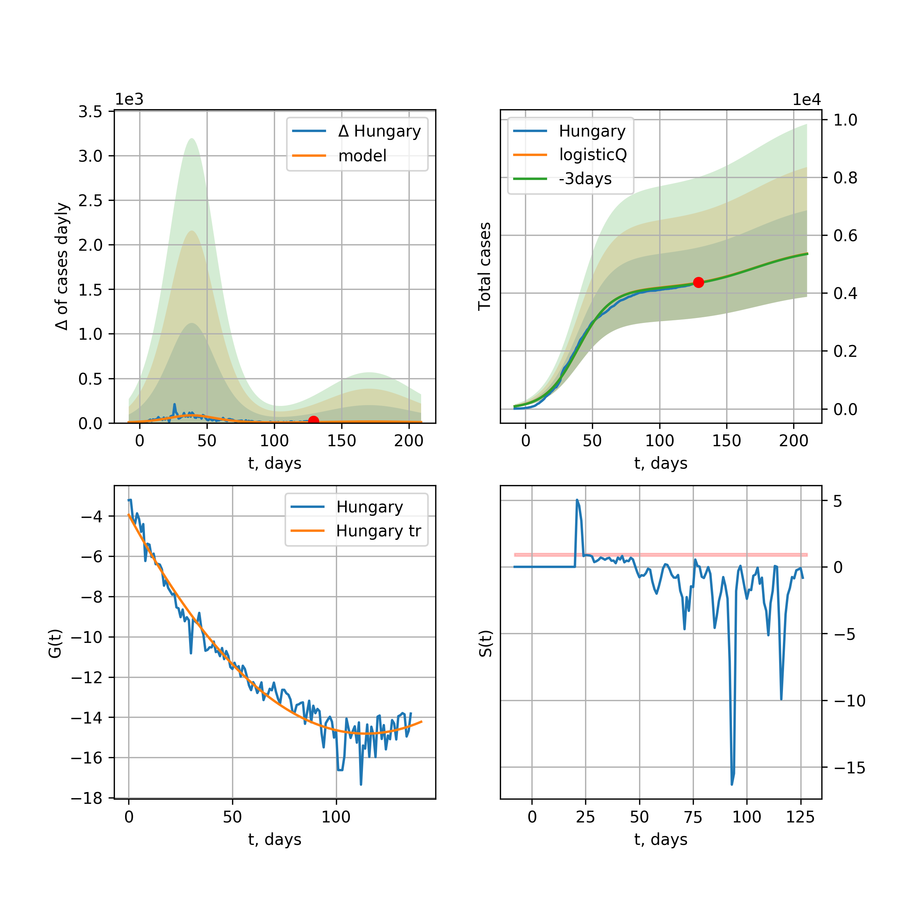

Multi-logistic model of COVID-19 dynamics
Model, code, results
Project maintained by algmaknick Hosted on GitHub Pages — Theme by mattgraham
World

World data at: 2020-05-04
+3 day model MAPE: 0.046750
model: bi-logisticQ
coeffs: [ 3.37522788e+06 2.83487827e-06 7.21912096e+01 -4.25139404e+04]
S.Korea scenario coeffs: [0.35416971, 0.02606324, 4.35859408, 19.30413219]
rational stdev: 0.133916
forecast at the end of period: +313 days
deltaDaycases: 327
total cases: 4973780 ± 666067
total death: 344320 ± 138329
tri-logisticQ approximation splitting points: 26,59
trend coefficient of determination: 0.957216
intercept_: -9.890425229004336
coeffs_: [ 0. -0.26614025 0.00124975]
trend1 coefficient of determination: 0.874764
intercept_: -22.035447570025077
coeffs_: [ 0. 0.31660897 -0.00341999]
trend coefficient of determination: 0.989732
intercept_: -1.1621632162289828
coeffs_: [ 0. -0.33547046 0.00158198]
European Union

European Union data at: 2020-05-04
+3 day model MAPE: 0.015403
model: logisticQ
coeffs: [ 1.03224342e+06 1.20654630e-06 4.83924599e+01 -1.04532878e+05]
S.Korea scenario coeffs: [0.35416971, 0.02606324, 4.35859408, 19.30413219]
rational stdev: 0.427805
forecast at the end of period: +208 days
deltaDaycases: 200
total cases: 1394742 ± 596678
total death: 145542 ± 186790
trend coefficient of determination: 0.986880
intercept_: -3.0268360787846085
coeffs_: [ 0. -0.32703623 0.00166905]
USA

USA data at: 2020-05-04
+3 day model MAPE: 0.045285
model: logisticQ
coeffs: [ 1.27997941e+06 1.28233949e-06 3.68873133e+01 -9.12459676e+04]
S.Korea scenario coeffs: [0.35416971, 0.02606324, 4.35859408, 19.30413219]
rational stdev: 0.424897
forecast at the end of period: +159 days
deltaDaycases: 1039
total cases: 1715426 ± 728879
total death: 98890 ± 126054
trend coefficient of determination: 0.996626
intercept_: -5.576095611051418
coeffs_: [ 0. -0.37547705 0.00291817]
Spain

Spain data at: 2020-05-04
+3 day model MAPE: 0.014502
model: bi-logisticQ
coeffs: [ 7.07618559e+04 4.07398099e-06 4.99562471e+01 -6.17848298e+04]
rational stdev: 0.339384
forecast at the end of period: +61 days
deltaDaycases: 0
total cases: 251251 ± 85270
total death: 25730 ± 26197
bi-logisticQ approximation splitting point: 50
trend coefficient of determination: 0.997202
intercept_: -3.834231460165485
coeffs_: [ 0. -0.42809872 0.00374483]
trend coefficient of determination: 0.637282
intercept_: -21.391415780434357
coeffs_: [ 0. 0.24714493 -0.00276252]
Italy

Italy data at: 2020-05-04
+3 day model MAPE: 0.016702
model: logisticQ
coeffs: [ 2.08608737e+05 7.68562722e-07 2.96936102e+01 -1.41791843e+05]
S.Korea scenario coeffs: [0.35416971, 0.02606324, 4.35859408, 19.30413219]
rational stdev: 0.324566
forecast at the end of period: +117 days
deltaDaycases: 229
total cases: 278148 ± 90277
total death: 38163 ± 37159
trend coefficient of determination: 0.993518
intercept_: -7.162403635462255
coeffs_: [ 0. -0.28015401 0.00203922]
United Kingdom

United Kingdom data at: 2020-05-04
+3 day model MAPE: 0.044799
model: logisticQ
coeffs: [ 2.02394358e+05 1.71568523e-06 4.16719373e+01 -6.98919802e+04]
S.Korea scenario coeffs: [0.35416971, 0.02606324, 4.35859408, 19.30413219]
rational stdev: 0.393432
forecast at the end of period: +173 days
deltaDaycases: 183
total cases: 270985 ± 106614
total death: 40855 ± 48221
trend coefficient of determination: 0.995332
intercept_: -4.1908616926383715
coeffs_: [ 0. -0.30852154 0.00199576]
France

France data at: 2020-05-04
+3 day model MAPE: 0.004671
model: logisticQ
coeffs: [ 1.69654537e+05 2.63961136e-06 3.23712875e+01 -5.68429791e+04]
S.Korea scenario coeffs: [0.35416971, 0.02606324, 4.35859408, 19.30413219]
rational stdev: 0.311507
forecast at the end of period: +127 days
deltaDaycases: 128
total cases: 228049 ± 71039
total death: 33913 ± 31692
trend coefficient of determination: 0.982300
intercept_: -5.081743310780215
coeffs_: [ 0. -0.30368452 0.00177713]
Germany

Germany data at: 2020-05-04
+3 day model MAPE: 0.012579
model: logisticQ
coeffs: [ 1.61664606e+05 1.24249044e-06 3.00390432e+01 -1.17299390e+05]
S.Korea scenario coeffs: [0.35416971, 0.02606324, 4.35859408, 19.30413219]
rational stdev: 0.372532
forecast at the end of period: +131 days
deltaDaycases: 44
total cases: 218323 ± 81332
total death: 9188 ± 10268
trend coefficient of determination: 0.993006
intercept_: -4.650719542219628
coeffs_: [ 0. -0.33894939 0.00229557]
Turkey

Turkey data at: 2020-05-04
+3 day model MAPE: 0.019766
model: logisticQ
coeffs: [ 1.30703624e+05 2.51182125e-06 2.72026661e+01 -6.00143206e+04]
S.Korea scenario coeffs: [0.35416971, 0.02606324, 4.35859408, 19.30413219]
rational stdev: 0.393789
forecast at the end of period: +126 days
deltaDaycases: 56
total cases: 176261 ± 69409
total death: 4778 ± 5644
trend coefficient of determination: 0.976057
intercept_: -3.0619220252876573
coeffs_: [ 0. -0.48306631 0.00467631]
Russia

Russia data at: 2020-05-04
+3 day model MAPE: 0.122425
model: logisticQ
coeffs: [ 2.15767488e+05 6.86395565e-06 5.26496077e+01 -2.02955437e+04]
S.Korea scenario coeffs: [0.35416971, 0.02606324, 4.35859408, 19.30413219]
rational stdev: 0.375975
forecast at the end of period: +229 days
deltaDaycases: 101
total cases: 290762 ± 109319
total death: 2714 ± 3061
trend coefficient of determination: 0.951648
intercept_: -3.707947971924197
coeffs_: [ 0. -0.19879302 0.00033149]
Iran

Iran data at: 2020-05-04
+3 day model MAPE: 0.018342
model: bi-logisticQ
coeffs: [ 8.84400558e+04 9.91669145e-07 3.64454485e+01 -1.25950597e+05]
S.Korea scenario coeffs: [0.35, 0.5, 3, 1]
rational stdev: 0.317769
forecast at the end of period: +103 days
deltaDaycases: 42
total cases: 126081 ± 40064
total death: 8022 ± 7647
bi-logisticQ approximation splitting point: 17
trend coefficient of determination: 0.987745
intercept_: -2.720144864989817
coeffs_: [ 0. -0.61067547 0.00823538]
trend coefficient of determination: 0.984095
intercept_: -8.59407175548279
coeffs_: [ 0. -0.15364807 0.00067152]
Brazil

Brazil data at: 2020-05-04
+3 day model MAPE: 0.010090
model: logisticQ
coeffs: [ 2.57995309e+05 7.77319105e-06 5.83816485e+01 -1.22936063e+04]
S.Korea scenario coeffs: [0.35416971, 0.02606324, 4.35859408, 19.30413219]
rational stdev: 0.410533
forecast at the end of period: +278 days
deltaDaycases: 98
total cases: 347333 ± 142591
total death: 23557 ± 29012
trend coefficient of determination: 0.842498
intercept_: -3.899300817075522
coeffs_: [ 0. -0.31431093 0.00241042]
Canada

Canada data at: 2020-05-04
+3 day model MAPE: 0.050557
model: logisticQ
coeffs: [ 6.88675959e+04 1.52302995e-06 4.01923199e+01 -7.00261060e+04]
S.Korea scenario coeffs: [0.35416971, 0.02606324, 4.35859408, 19.30413219]
rational stdev: 0.402888
forecast at the end of period: +196 days
deltaDaycases: 21
total cases: 92869 ± 37416
total death: 5889 ± 7117
trend coefficient of determination: 0.985479
intercept_: -4.621433972937829
coeffs_: [ 0. -0.2704661 0.00175789]
Belgium

Belgium data at: 2020-05-04
+3 day model MAPE: 0.010225
model: logisticQ
coeffs: [ 5.18262097e+04 1.70006414e-06 3.17759568e+01 -7.39854664e+04]
S.Korea scenario coeffs: [0.35416971, 0.02606324, 4.35859408, 19.30413219]
rational stdev: 0.346564
forecast at the end of period: +131 days
deltaDaycases: 50
total cases: 69367 ± 24040
total death: 10934 ± 11367
trend coefficient of determination: 0.978781
intercept_: -4.197028139253948
coeffs_: [ 0. -0.33196635 0.00251431]
Peru

Peru data at: 2020-05-04
+3 day model MAPE: 0.047476
model: logisticQ
coeffs: [ 8.97572534e+04 5.92483748e-06 4.89920140e+01 -1.95825250e+04]
S.Korea scenario coeffs: [0.35416971, 0.02606324, 4.35859408, 19.30413219]
rational stdev: 0.351087
forecast at the end of period: +229 days
deltaDaycases: 39
total cases: 120867 ± 42434
total death: 3429 ± 3611
trend coefficient of determination: 0.965017
intercept_: -3.5547949606872873
coeffs_: [ 0. -0.29996895 0.00222937]
Netherlands

Netherlands data at: 2020-05-04
+3 day model MAPE: 0.009169
model: logisticQ
coeffs: [ 4.19953592e+04 1.50263276e-06 3.31505261e+01 -7.94418060e+04]
S.Korea scenario coeffs: [0.35416971, 0.02606324, 4.35859408, 19.30413219]
rational stdev: 0.363318
forecast at the end of period: +131 days
deltaDaycases: 52
total cases: 55961 ± 20331
total death: 6975 ± 7602
trend coefficient of determination: 0.980179
intercept_: -3.223784178496583
coeffs_: [ 0. -0.36182443 0.00280933]
India

India data at: 2020-05-04
+3 day model MAPE: 0.100500
model: logisticQ
coeffs: [ 6.74729315e+04 3.91221667e-04 2.07371250e+01 -2.78819831e+02]
S.Korea scenario coeffs: [0.35416971, 0.02606324, 4.35859408, 19.30413219]
rational stdev: 0.140387
forecast at the end of period: +159 days
deltaDaycases: 6
total cases: 91259 ± 12811
total death: 3077 ± 1295
trend coefficient of determination: 0.975476
intercept_: -9.256031887912254
coeffs_: [ 0. -0.2403772 0.00350419]
Switzerland

Switzerland data at: 2020-05-04
+3 day model MAPE: 0.008028
model: logisticQ
coeffs: [ 2.91457188e+04 1.06520350e-06 2.53162193e+01 -1.44824071e+05]
S.Korea scenario coeffs: [0.35416971, 0.02606324, 4.35859408, 19.30413219]
rational stdev: 0.360017
forecast at the end of period: +103 days
deltaDaycases: 12
total cases: 39310 ± 14152
total death: 2339 ± 2526
trend coefficient of determination: 0.987211
intercept_: -3.419693334221604
coeffs_: [ 0. -0.35920102 0.00262264]
Ecuador

Ecuador data at: 2020-05-04
+3 day model MAPE: 0.085850
model: logisticQ
coeffs: [ 3.07235442e+04 1.55214511e-06 2.75534123e+01 -7.48634821e+04]
S.Korea scenario coeffs: [0.35416971, 0.02606324, 4.35859408, 19.30413219]
rational stdev: 0.341728
forecast at the end of period: +131 days
deltaDaycases: 20
total cases: 41248 ± 14095
total death: 2030 ± 2081
trend coefficient of determination: 0.624533
intercept_: -6.297136920890916
coeffs_: [ 0. -0.27370308 0.00211128]
Portugal

Portugal data at: 2020-05-04
+3 day model MAPE: 0.017973
model: logisticQ
coeffs: [ 2.54139414e+04 1.16318084e-06 2.87958294e+01 -1.15365867e+05]
S.Korea scenario coeffs: [0.35416971, 0.02606324, 4.35859408, 19.30413219]
rational stdev: 0.391138
forecast at the end of period: +131 days
deltaDaycases: 10
total cases: 34265 ± 13402
total death: 1427 ± 1674
trend coefficient of determination: 0.987095
intercept_: -2.7298049072862254
coeffs_: [ 0. -0.37999566 0.00304147]
Saudi Arabia

Saudi Arabia data at: 2020-05-04
+3 day model MAPE: 0.029501
model: logisticQ
coeffs: [ 4.03194720e+04 6.10226811e-04 4.79942199e+01 -1.78798421e+02]
S.Korea scenario coeffs: [0.35416971, 0.02606324, 4.35859408, 19.30413219]
rational stdev: 0.382599
forecast at the end of period: +215 days
deltaDaycases: 24
total cases: 54196 ± 20735
total death: 361 ± 414
trend coefficient of determination: 0.794888
intercept_: -4.194835149946844
coeffs_: [ 0. -0.24849124 0.0017874 ]
Sweden

Sweden data at: 2020-05-04
+3 day model MAPE: 0.019312
model: logisticQ
coeffs: [ 2.70898682e+04 1.95586200e-06 4.32895065e+01 -4.79619640e+04]
S.Korea scenario coeffs: [0.35416971, 0.02606324, 4.35859408, 19.30413219]
rational stdev: 0.335868
forecast at the end of period: +187 days
deltaDaycases: 26
total cases: 36109 ± 12128
total death: 4400 ± 4433
trend coefficient of determination: 0.965719
intercept_: -3.92873701188595
coeffs_: [ 0. -0.29454583 0.00228842]
Ireland

Ireland data at: 2020-05-04
+3 day model MAPE: 0.008029
model: logisticQ
coeffs: [ 2.30265904e+04 7.33387669e-05 3.43197580e+01 -1.82681270e+03]
S.Korea scenario coeffs: [0.35416971, 0.02606324, 4.35859408, 19.30413219]
rational stdev: 0.345108
forecast at the end of period: +145 days
deltaDaycases: 18
total cases: 30905 ± 10665
total death: 1872 ± 1938
trend coefficient of determination: 0.979889
intercept_: -3.559875104157376
coeffs_: [ 0. -0.30229193 0.00212978]
Mexico

Mexico data at: 2020-05-04
+3 day model MAPE: 0.031841
model: logisticQ
coeffs: [ 5.12587968e+04 1.28537644e-05 3.96807974e+01 -8.17746093e+03]
S.Korea scenario coeffs: [0.35416971, 0.02606324, 4.35859408, 19.30413219]
rational stdev: 0.220484
forecast at the end of period: +215 days
deltaDaycases: 13
total cases: 69168 ± 15250
total death: 6307 ± 4171
trend coefficient of determination: 0.988551
intercept_: -6.547056879060921
coeffs_: [ 0. -0.22512856 0.0019486 ]
Singapore

Singapore data at: 2020-05-04
+3 day model MAPE: 0.021790
model: bi-logisticQ
coeffs: [ 1.98027596e+04 1.53757682e-03 8.22921294e+01 -4.57967006e+01]
S.Korea scenario coeffs: [0.35, 0.5, 4.0, 1.0]
rational stdev: 0.422168
forecast at the end of period: +103 days
deltaDaycases: 0
total cases: 19901 ± 8401
total death: 19 ± 24
bi-logisticQ approximation splitting point: 35
trend coefficient of determination: 0.914568
intercept_: -2.036640634366525
coeffs_: [ 0. -0.39517788 0.00592335]
trend coefficient of determination: 0.889529
intercept_: -10.267052536710436
coeffs_: [ 0. 0.10413853 -0.00133667]
Chile

Chile data at: 2020-05-04
+3 day model MAPE: 0.159172
model: logisticQ
coeffs: [ 2.89117429e+04 1.16256965e-06 4.64436830e+01 -7.37875646e+04]
S.Korea scenario coeffs: [0.35416971, 0.02606324, 4.35859408, 19.30413219]
rational stdev: 0.423399
forecast at the end of period: +229 days
deltaDaycases: 13
total cases: 38844 ± 16446
total death: 508 ± 645
trend coefficient of determination: 0.750489
intercept_: -4.225554906537425
coeffs_: [ 0. -0.28408898 0.00235348]
Israel

Israel data at: 2020-05-04
+3 day model MAPE: 0.013153
model: logisticQ
coeffs: [ 1.60648097e+04 1.15655097e-06 3.53924328e+01 -1.24271298e+05]
S.Korea scenario coeffs: [0.35416971, 0.02606324, 4.35859408, 19.30413219]
rational stdev: 0.408271
forecast at the end of period: +159 days
deltaDaycases: 2
total cases: 21715 ± 8865
total death: 314 ± 384
trend coefficient of determination: 0.933491
intercept_: -3.045083496657373
coeffs_: [ 0. -0.23018891 0.0007811 ]
Austria

Austria data at: 2020-05-04
+3 day model MAPE: 0.007285
model: logisticQ
coeffs: [ 1.50349249e+04 1.44856464e-06 2.31680731e+01 -1.40996931e+05]
S.Korea scenario coeffs: [0.35416971, 0.02606324, 4.35859408, 19.30413219]
rational stdev: 0.318439
forecast at the end of period: +89 days
deltaDaycases: 4
total cases: 20321 ± 6471
total death: 780 ± 745
trend coefficient of determination: 0.979979
intercept_: -2.7901938520997884
coeffs_: [ 0. -0.35329181 0.00239151]
Belarus

Belarus data at: 2020-05-04
+3 day model MAPE: 0.035494
model: logisticQ
coeffs: [ 2.52738208e+04 6.82379899e-06 2.03377374e+01 -2.02453368e+04]
S.Korea scenario coeffs: [0.35416971, 0.02606324, 4.35859408, 19.30413219]
rational stdev: 0.234108
forecast at the end of period: +103 days
deltaDaycases: 34
total cases: 33714 ± 7892
total death: 198 ± 139
trend coefficient of determination: 0.975505
intercept_: -6.996510230019162
coeffs_: [ 0. -0.27926896 0.00327267]
Japan

Japan data at: 2020-05-04
+3 day model MAPE: 0.020538
model: logisticQ
coeffs: [ 1.50604542e+04 1.29746348e-03 2.01020297e+01 -9.40341220e+01]
S.Korea scenario coeffs: [0.35416971, 0.02606324, 4.35859408, 19.30413219]
rational stdev: 0.084471
forecast at the end of period: +103 days
deltaDaycases: 8
total cases: 20270 ± 1712
total death: 720 ± 182
trend coefficient of determination: 0.916678
intercept_: -9.91869930525792
coeffs_: [ 0. -0.00888347 -0.00182275]
Qatar

Qatar data at: 2020-05-04
+3 day model MAPE: 0.037167
model: bi-logisticQ
coeffs: [ 2.76411108e+04 3.03366663e-05 4.87167850e+01 -3.78519558e+03]
S.Korea scenario coeffs: [0.35416971, 0.02606324, 4.35859408, 19.30413219]
rational stdev: 0.304817
forecast at the end of period: +229 days
deltaDaycases: 10
total cases: 37251 ± 11354
total death: 27 ± 24
bi-logisticQ approximation splitting point: 15
trend coefficient of determination: 0.929567
intercept_: -1.9786509648817043
coeffs_: [ 0. -0.62175364 -0.00080828]
trend coefficient of determination: 0.862444
intercept_: -10.82677819115488
coeffs_: [ 0. 0.10822831 -0.00249623]
Poland

Poland data at: 2020-05-04
+3 day model MAPE: 0.029624
model: logisticQ
coeffs: [ 1.48998638e+04 1.73138544e-06 3.34356122e+01 -6.66429397e+04]
S.Korea scenario coeffs: [0.35416971, 0.02606324, 4.35859408, 19.30413219]
rational stdev: 0.361536
forecast at the end of period: +145 days
deltaDaycases: 13
total cases: 19934 ± 7207
total death: 993 ± 1077
trend coefficient of determination: 0.984004
intercept_: -2.9993187789822136
coeffs_: [ 0. -0.34178733 0.00288182]
UAE

UAE data at: 2020-05-04
+3 day model MAPE: 0.050316
model: logisticQ
coeffs: [ 1.85318077e+04 3.58144032e-06 2.05715268e+01 -3.25688342e+04]
S.Korea scenario coeffs: [0.35416971, 0.02606324, 4.35859408, 19.30413219]
rational stdev: 0.167010
forecast at the end of period: +89 days
deltaDaycases: 48
total cases: 24148 ± 4033
total death: 224 ± 112
trend coefficient of determination: 0.976439
intercept_: -7.75992116811617
coeffs_: [ 0. -0.21722334 0.00221352]
Romania

Romania data at: 2020-05-04
+3 day model MAPE: 0.034945
model: logisticQ
coeffs: [ 1.42588314e+04 1.62290068e-06 3.26406997e+01 -7.14898038e+04]
S.Korea scenario coeffs: [0.35416971, 0.02606324, 4.35859408, 19.30413219]
rational stdev: 0.343450
forecast at the end of period: +131 days
deltaDaycases: 23
total cases: 18880 ± 6484
total death: 1142 ± 1176
trend coefficient of determination: 0.985231
intercept_: -3.7883817527445904
coeffs_: [ 0. -0.30627455 0.00250344]
Ukraine

Ukraine data at: 2020-05-03
+3 day model MAPE: 0.022262
model: logisticQ
coeffs: [ 1.69609692e+04 7.23229405e-06 3.33348346e+01 -1.72167355e+04]
S.Korea scenario coeffs: [0.35416971, 0.02606324, 4.35859408, 19.30413219]
rational stdev: 0.335141
forecast at the end of period: +160 days
deltaDaycases: 11
total cases: 22790 ± 7638
total death: 550 ± 552
trend coefficient of determination: 0.940334
intercept_: -3.704720756650657
coeffs_: [ 0. -0.35073451 0.00362919]
South_Korea

South Korea data at: 2020-05-04
+3 day model MAPE: 0.001301
model: bi-logisticQ
coeffs: [ 2.82635744e+03 1.75141676e-06 3.11588082e+01 -1.01674807e+05]
rational stdev: 0.134324
forecast at the end of period: +19 days
deltaDaycases: 0
total cases: 10726 ± 1440
total death: 252 ± 101
bi-logisticQ approximation splitting point: 25
trend coefficient of determination: 0.936575
intercept_: -5.550309986859278
coeffs_: [ 0. -0.32029791 -0.00074495]
trend coefficient of determination: 0.789631
intercept_: -11.68453872743249
coeffs_: [ 0. -0.04628202 -0.0003182 ]
Indonesia

Indonesia data at: 2020-05-04
+3 day model MAPE: 0.025205
model: logisticQ
coeffs: [ 1.42170968e+04 2.42119319e-05 2.18043172e+01 -4.21036996e+03]
S.Korea scenario coeffs: [0.35416971, 0.02606324, 4.35859408, 19.30413219]
rational stdev: 0.051589
forecast at the end of period: +117 days
deltaDaycases: 12
total cases: 18996 ± 980
total death: 1416 ± 219
trend coefficient of determination: 0.973015
intercept_: -8.52305940284915
coeffs_: [ 0. -0.14765513 0.00103908]
Denmark

Denmark data at: 2020-05-04
+3 day model MAPE: 0.029833
model: bi-logisticQ
coeffs: [ 8.55218150e+03 1.04625316e-06 3.36445202e+01 -1.29826956e+05]
S.Korea scenario coeffs: [0.35416971, 0.02606324, 4.35859408, 19.30413219]
rational stdev: 0.313099
forecast at the end of period: +145 days
deltaDaycases: 4
total cases: 12384 ± 3877
total death: 631 ± 592
bi-logisticQ approximation splitting point: 18
trend coefficient of determination: 0.963211
intercept_: -1.9308894789691964
coeffs_: [ 0. -0.26605777 -0.01390014]
trend coefficient of determination: 0.956729
intercept_: -7.190529695657682
coeffs_: [ 0. -0.12459892 0.00039315]
Serbia

Serbia data at: 2020-05-04
+3 day model MAPE: 0.020071
model: logisticQ
coeffs: [ 1.00460873e+04 3.28098069e-06 2.85852478e+01 -4.39750010e+04]
S.Korea scenario coeffs: [0.35416971, 0.02606324, 4.35859408, 19.30413219]
rational stdev: 0.276265
forecast at the end of period: +145 days
deltaDaycases: 1
total cases: 13577 ± 3751
total death: 279 ± 231
trend coefficient of determination: 0.965952
intercept_: -3.950531432989008
coeffs_: [ 0. -0.27719933 0.00194196]
Philippines

Philippines data at: 2020-05-04
+3 day model MAPE: 0.060888
model: logisticQ
coeffs: [ 9.39267985e+03 1.36020956e-06 2.42001048e+01 -8.71713341e+04]
S.Korea scenario coeffs: [0.35416971, 0.02606324, 4.35859408, 19.30413219]
rational stdev: 0.357440
forecast at the end of period: +103 days
deltaDaycases: 13
total cases: 12488 ± 4463
total death: 820 ± 879
trend coefficient of determination: 0.945514
intercept_: -4.393786250943215
coeffs_: [ 0. -0.34645004 0.00362746]
Norway

Norway data at: 2020-05-04
+3 day model MAPE: 0.009029
model: logisticQ
coeffs: [ 7.68161363e+03 1.17124255e-06 2.35668235e+01 -1.11631921e+05]
S.Korea scenario coeffs: [0.35416971, 0.02606324, 4.35859408, 19.30413219]
rational stdev: 0.331435
forecast at the end of period: +103 days
deltaDaycases: 3
total cases: 10351 ± 3430
total death: 280 ± 278
trend coefficient of determination: 0.969992
intercept_: -3.172614416001025
coeffs_: [ 0. -0.35650922 0.00295501]
Czechia

Czechia data at: 2020-05-04
+3 day model MAPE: 0.013074
model: logisticQ
coeffs: [ 7.59088486e+03 1.19499572e-06 2.43609188e+01 -1.23821509e+05]
S.Korea scenario coeffs: [0.35416971, 0.02606324, 4.35859408, 19.30413219]
rational stdev: 0.342425
forecast at the end of period: +103 days
deltaDaycases: 3
total cases: 10227 ± 3502
total death: 329 ± 337
trend coefficient of determination: 0.908149
intercept_: -3.9493711038252943
coeffs_: [ 0. -0.28441092 0.00193483]
Colombia

Colombia data at: 2020-05-04
+3 day model MAPE: 0.086034
model: logisticQ
coeffs: [ 1.20687497e+04 3.16671300e-06 4.07110707e+01 -2.77859150e+04]
S.Korea scenario coeffs: [0.35416971, 0.02606324, 4.35859408, 19.30413219]
rational stdev: 0.343989
forecast at the end of period: +159 days
deltaDaycases: 32
total cases: 15402 ± 5298
total death: 691 ± 713
trend coefficient of determination: 0.961661
intercept_: -3.3290163019425707
coeffs_: [ 0. -0.36385728 0.00392786]
Australia

Australia data at: 2020-05-04
+3 day model MAPE: 0.004048
model: logisticQ
coeffs: [ 6.65173602e+03 2.77410129e-06 1.81118032e+01 -8.27444301e+04]
S.Korea scenario coeffs: [0.35416971, 0.02606324, 4.35859408, 19.30413219]
rational stdev: 0.185424
forecast at the end of period: +47 days
deltaDaycases: 15
total cases: 8869 ± 1644
total death: 124 ± 68
trend coefficient of determination: 0.971745
intercept_: -4.704494963777984
coeffs_: [ 0. -0.27263439 0.00157823]
Malaysia

Malaysia data at: 2020-05-04
+3 day model MAPE: 0.017457
model: logisticQ
coeffs: [ 6.11686701e+03 1.60200441e-06 2.76338772e+01 -8.19186535e+04]
S.Korea scenario coeffs: [0.35416971, 0.02606324, 4.35859408, 19.30413219]
rational stdev: 0.332729
forecast at the end of period: +103 days
deltaDaycases: 8
total cases: 8152 ± 2712
total death: 134 ± 133
trend coefficient of determination: 0.839474
intercept_: -4.341920078543348
coeffs_: [ 0. -0.25804474 0.00182237]
Egypt

Egypt data at: 2020-05-04
+3 day model MAPE: 0.065573
model: logisticQ
coeffs: [ 1.09268082e+04 1.11707785e-05 3.42837490e+01 -7.95754288e+03]
S.Korea scenario coeffs: [0.35416971, 0.02606324, 4.35859408, 19.30413219]
rational stdev: 0.118973
forecast at the end of period: +201 days
deltaDaycases: 2
total cases: 14730 ± 1752
total death: 942 ± 336
trend coefficient of determination: 0.932534
intercept_: -7.545539844829078
coeffs_: [ 0. -0.13385997 0.00084047]
Finland

Finland data at: 2020-05-04
+3 day model MAPE: 0.022801
model: logisticQ
coeffs: [ 5.69765754e+03 1.43182798e-06 3.85469348e+01 -7.09290368e+04]
S.Korea scenario coeffs: [0.35416971, 0.02606324, 4.35859408, 19.30413219]
rational stdev: 0.380901
forecast at the end of period: +173 days
deltaDaycases: 3
total cases: 7648 ± 2913
total death: 344 ± 393
trend coefficient of determination: 0.883566
intercept_: -3.3187569761172657
coeffs_: [ 0. -0.24433096 0.00157352]
Morocco

Morocco data at: 2020-05-04
+3 day model MAPE: 0.019926
model: logisticQ
coeffs: [ 5.71744317e+03 6.37480879e-06 2.70056270e+01 -1.90838932e+04]
S.Korea scenario coeffs: [0.35416971, 0.02606324, 4.35859408, 19.30413219]
rational stdev: 0.242619
forecast at the end of period: +131 days
deltaDaycases: 4
total cases: 7676 ± 1862
total death: 271 ± 197
trend coefficient of determination: 0.965873
intercept_: -4.902227540903189
coeffs_: [ 0. -0.25675871 0.00225996]
Argentina

Argentina data at: 2020-05-04
+3 day model MAPE: 0.039504
model: logisticQ
coeffs: [ 5.76068141e+03 1.63255496e-06 2.66287417e+01 -5.70896763e+04]
S.Korea scenario coeffs: [0.35416971, 0.02606324, 4.35859408, 19.30413219]
rational stdev: 0.272019
forecast at the end of period: +145 days
deltaDaycases: 3
total cases: 7733 ± 2103
total death: 411 ± 335
trend coefficient of determination: 0.361466
intercept_: -6.787062300579829
coeffs_: [ 0. -0.24094222 0.00292348]
Algeria

Algeria data at: 2020-05-04
+3 day model MAPE: 0.073316
model: logisticQ
coeffs: [ 5.60303653e+03 1.70919725e-06 2.71141865e+01 -5.37914830e+04]
S.Korea scenario coeffs: [0.35416971, 0.02606324, 4.35859408, 19.30413219]
rational stdev: 0.260757
forecast at the end of period: +159 days
deltaDaycases: 2
total cases: 7543 ± 1967
total death: 754 ± 589
trend coefficient of determination: 0.931010
intercept_: -6.219885782287269
coeffs_: [ 0. -0.22369899 0.00229577]
Luxembourg

Luxembourg data at: 2020-05-04
+3 day model MAPE: 0.008794
model: logisticQ
coeffs: [ 3.68698650e+03 1.21324316e-06 -1.48439629e+05 9.27333988e+00]
S.Korea scenario coeffs: [0.35416971, 0.02606324, 4.35859408, 19.30413219]
rational stdev: 0.263282
forecast at the end of period: +257 days
deltaDaycases: 1
total cases: 4895 ± 1288
total death: 122 ± 96
trend coefficient of determination: 0.943288
intercept_: -4.928668677841369
coeffs_: [ 0. -0.37214348 0.00387164]
Thailand

Thailand data at: 2020-05-04
+3 day model MAPE: 0.004724
model: Richards
coeffs: [ 2.96202236e+03 1.56887338e+01 -3.65145010e+01 8.10416922e-03]
rational stdev: 0.093622
forecast at the end of period: +19 days
deltaDaycases: 0
total cases: 2959 ± 277
total death: 53 ± 14
trend coefficient of determination: 0.858033
intercept: -1.207754
slope: -0.119690
Hungary

Hungary data at: 2020-05-04
+3 day model MAPE: 0.012668
model: logisticQ
coeffs: [ 3.48131058e+03 2.90084458e-06 3.37757501e+01 -3.90048331e+04]
S.Korea scenario coeffs: [0.35416971, 0.02606324, 4.35859408, 19.30413219]
rational stdev: 0.303602
forecast at the end of period: +145 days
deltaDaycases: 3
total cases: 4642 ± 1409
total death: 549 ± 500
trend coefficient of determination: 0.975213
intercept_: -3.3197125872226554
coeffs_: [ 0. -0.25175368 0.00178296]
Greece

Greece data at: 2020-05-04
+3 day model MAPE: 0.010107
model: logisticQ
coeffs: [ 2.58641106e+03 1.35875784e-06 2.30901196e+01 -9.42879326e+04]
S.Korea scenario coeffs: [0.35416971, 0.02606324, 4.35859408, 19.30413219]
rational stdev: 0.279479
forecast at the end of period: +103 days
deltaDaycases: 1
total cases: 3482 ± 973
total death: 193 ± 161
trend coefficient of determination: 0.936226
intercept_: -3.3179348125292556
coeffs_: [ 0. -0.30310674 0.00232656]
Iraq

Iraq data at: 2020-05-04
+3 day model MAPE: 0.025178
model: bi-logisticQ
coeffs: [-8.72680884e+02 3.51502976e-03 2.35694809e+01 -1.09727244e+02]
rational stdev: 0.060921
forecast at the end of period: +131 days
deltaDaycases: 0
total cases: 2247 ± 136
total death: 93 ± 16
bi-logisticQ approximation splitting point: 32
trend coefficient of determination: 0.943011
intercept_: -6.485709272215987
coeffs_: [ 0. -0.09183938 -0.00203399]
trend coefficient of determination: 0.156657
intercept_: -15.918086697889173
coeffs_: [ 0. 0.21726534 -0.00246275]
Croatia

Croatia data at: 2020-05-04
+3 day model MAPE: 0.006792
model: logisticQ
coeffs: [ 2.08244855e+03 1.35177376e-06 2.62872908e+01 -1.09873738e+05]
S.Korea scenario coeffs: [0.35416971, 0.02606324, 4.35859408, 19.30413219]
rational stdev: 0.328218
forecast at the end of period: +117 days
deltaDaycases: 0
total cases: 2811 ± 922
total death: 107 ± 105
trend coefficient of determination: 0.981141
intercept_: -2.3423694371268304
coeffs_: [ 0. -0.26568873 0.0014503 ]
Iceland

Iceland data at: 2020-05-04
+3 day model MAPE: 0.000047
model: logisticQ
coeffs: [ 1.80196234e+03 9.77334790e-06 1.33194422e+01 -1.81285259e+04]
rational stdev: 0.068028
forecast at the end of period: +47 days
deltaDaycases: 0
total cases: 1801 ± 122
total death: 10 ± 2
trend coefficient of determination: 0.934712
intercept_: -5.900561127560202
coeffs_: [ 0. -0.15429423 -0.0004904 ]
Estonia

Estonia data at: 2020-05-04
+3 day model MAPE: 0.005017
model: logisticQ
coeffs: [ 1.70876963e+03 2.52318236e-06 1.27734294e+01 -5.01875792e+04]
S.Korea scenario coeffs: [0.0875, 0.5, 4.0, 1]
rational stdev: 0.138358
forecast at the end of period: +33 days
deltaDaycases: 1
total cases: 1834 ± 253
total death: 59 ± 24
trend coefficient of determination: 0.887650
intercept_: -6.505151430544258
coeffs_: [ 0. -0.1800094 0.00094096]
Bulgaria

Bulgaria data at: 2020-05-04
+3 day model MAPE: 0.021655
model: logisticQ
coeffs: [ 2.66223516e+03 3.62030306e-06 3.45419314e+01 -2.01040699e+04]
S.Korea scenario coeffs: [0.35416971, 0.02606324, 4.35859408, 19.30413219]
rational stdev: 0.180603
forecast at the end of period: +208 days
deltaDaycases: 0
total cases: 3581 ± 646
total death: 169 ± 91
trend coefficient of determination: 0.894553
intercept_: -5.92360172676006
coeffs_: [ 0. -0.19887214 0.00197436]
New Zealand

New Zealand data at: 2020-05-04
+3 day model MAPE: 0.003319
model: logisticQ
coeffs: [ 1.46208383e+03 4.25469532e-06 2.48338156e+01 -5.89157925e+04]
S.Korea scenario coeffs: [0.35416971, 0.02606324, 4.35859408, 19.30413219]
rational stdev: 0.402813
forecast at the end of period: +75 days
deltaDaycases: 2
total cases: 1958 ± 788
total death: 26 ± 31
trend coefficient of determination: 0.852019
intercept_: -4.16083440993709
coeffs_: [ 0. -0.11391724 -0.00092757]
Slovenia

Slovenia data at: 2020-05-04
+3 day model MAPE: 0.008285
model: bi-logisticQ
coeffs: [ 1.18778157e+03 1.06136744e-06 1.88788433e+01 -1.49731936e+05]
S.Korea scenario coeffs: [0.35416971, 0.02606324, 4.35859408, 19.30413219]
rational stdev: 0.226557
forecast at the end of period: +89 days
deltaDaycases: 0
total cases: 1822 ± 412
total death: 122 ± 82
bi-logisticQ approximation splitting point: 10
trend coefficient of determination: 0.968209
intercept_: -2.53431844604435
coeffs_: [ 0. -0.45029183 -0.00732028]
trend coefficient of determination: 0.900196
intercept_: -7.0051142098251
coeffs_: [ 0. -0.09535274 -0.00033896]
Slovakia

Slovakia data at: 2020-05-04
+3 day model MAPE: 0.026948
model: logisticQ
coeffs: [ 1.51523434e+03 3.85549630e-04 2.41085506e+01 -3.15309163e+02]
S.Korea scenario coeffs: [0.35416971, 0.02606324, 4.35859408, 19.30413219]
rational stdev: 0.282042
forecast at the end of period: +131 days
deltaDaycases: 0
total cases: 2046 ± 577
total death: 36 ± 30
trend coefficient of determination: 0.905794
intercept_: -3.379766284410225
coeffs_: [ 0. -0.26815831 0.00172272]
Lithuania

Lithuania data at: 2020-05-03
+3 day model MAPE: 0.015059
model: logisticQ
coeffs: [ 1.39342112e+03 9.18638609e-07 1.83583924e+01 -1.52984678e+05]
S.Korea scenario coeffs: [0.35416971, 0.02606324, 4.35859408, 19.30413219]
rational stdev: 0.359937
forecast at the end of period: +76 days
deltaDaycases: 1
total cases: 1864 ± 671
total death: 60 ± 64
trend coefficient of determination: 0.969840
intercept_: -1.4570431515709021
coeffs_: [ 0. -0.42701409 0.0043521 ]
Latvia

Latvia data at: 2020-05-04
+3 day model MAPE: 0.022842
model: logisticQ
coeffs: [ 8.42870727e+02 7.38741173e-07 1.80367360e+01 -1.78624895e+05]
S.Korea scenario coeffs: [0.35416971, 0.02606324, 4.35859408, 19.30413219]
rational stdev: 0.297975
forecast at the end of period: +61 days
deltaDaycases: 1
total cases: 1110 ± 330
total death: 19 ± 16
trend coefficient of determination: 0.743096
intercept_: -3.523642027031876
coeffs_: [ 0. -0.29028393 0.00270374]
Cyprus

Cyprus data at: 2020-05-04
+3 day model MAPE: 0.008496
model: logisticQ
coeffs: [ 8.59514273e+02 3.42561705e-06 1.58591415e+01 -4.51761862e+04]
S.Korea scenario coeffs: [0.35416971, 0.02606324, 4.35859408, 19.30413219]
rational stdev: 0.181471
forecast at the end of period: +89 days
deltaDaycases: 0
total cases: 1161 ± 210
total death: 19 ± 10
trend coefficient of determination: 0.826064
intercept_: -4.367699309168493
coeffs_: [ 0. -0.24161592 0.00184136]
Malta

Malta data at: 2020-05-04
+3 day model MAPE: 0.011462
model: Richards
coeffs: [4.72165478e+02 1.07719050e-01 2.27883741e+01 1.54845686e+00]
rational stdev: 0.252099
forecast at the end of period: +19 days
deltaDaycases: 0
total cases: 472 ± 118
total death: 3 ± 2
trend coefficient of determination: 0.872490
intercept: -5.907345
slope: -0.191476
Sri Lanka

Sri Lanka data at: 2020-05-04
+3 day model MAPE: 0.062838
model: bi-logisticQ
coeffs: [ 5.18033887e+02 4.95277952e-03 3.80543331e+01 -3.87676409e+01]
S.Korea scenario coeffs: [0.35416971, 0.02606324, 4.35859408, 19.30413219]
rational stdev: 0.261390
forecast at the end of period: +215 days
deltaDaycases: 0
total cases: 917 ± 239
total death: 9 ± 7
bi-logisticQ approximation splitting point: 35
trend coefficient of determination: 0.700900
intercept_: -1.7291427146735243
coeffs_: [ 0. -0.62059696 0.01251448]
trend coefficient of determination: 0.356970
intercept_: -45.35102800084556
coeffs_: [ 0. 1.68688112 -0.01943157]
References
- Worldometers COVID-19 Coronavirus Pandemic
- Su COVID-19 susijusi gyventojų ir verslo statistika
- Bi-logistic growth
- Least squares
- scikit-learn
- scipy.org
- European Centre for Disease Prevention and Control An agency of the European Union
- Aaron Miller, Mac Josh Reandelar, Kimberly Fasciglione, Violeta Roumenova, Yan Li, Gonzalo H Otazu, Correlation between universal BCG vaccination policy and reduced morbidity and mortality for COVID-19: an epidemiological study, https://doi.org/10.1101/2020.03.24.20042937